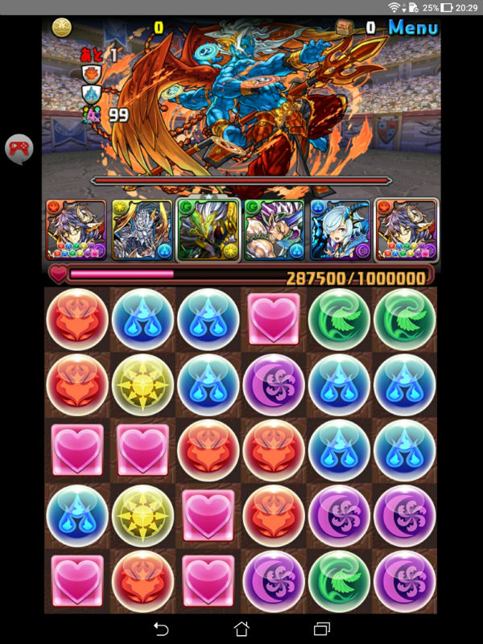
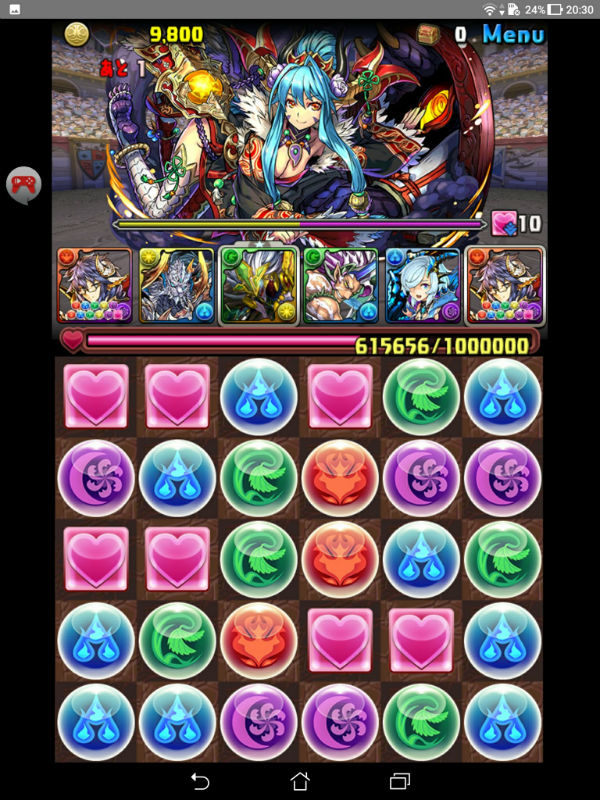
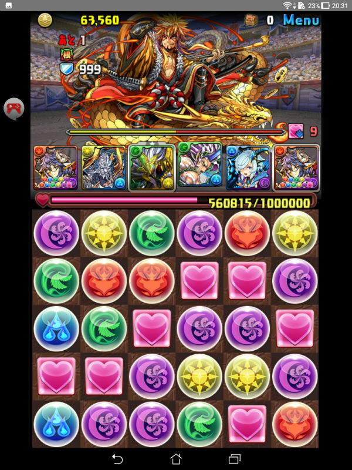
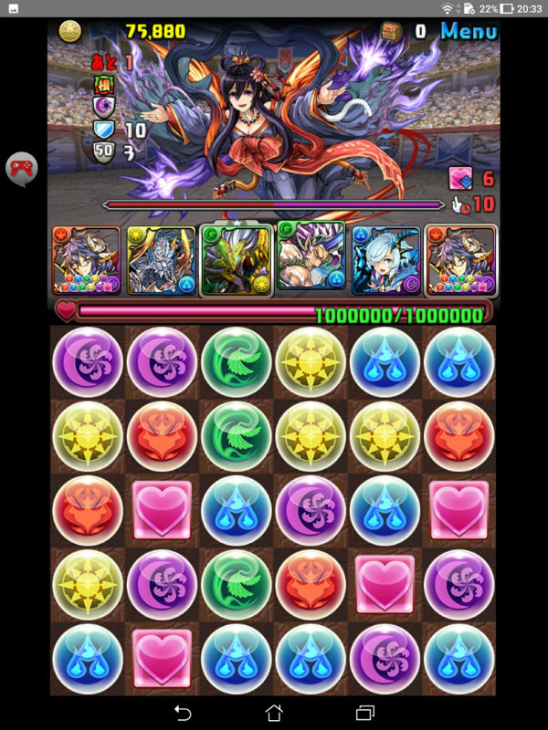
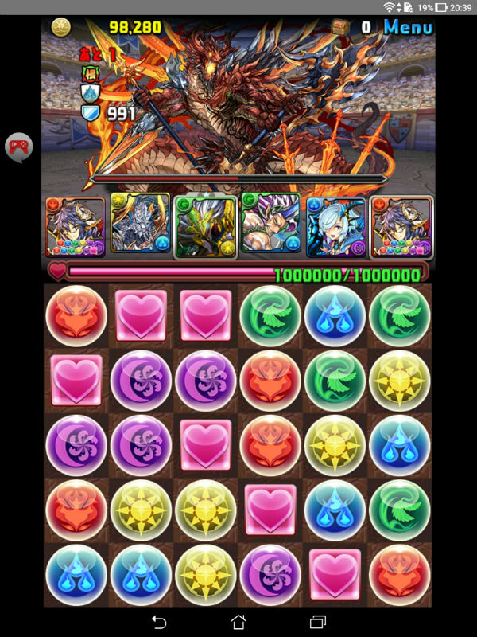

説明文の条件を満たしていたらキャラ変更は自由
回復を消しつつ、頑張って攻撃してワンパン。回復が3個あれば問題なし。回復が無い場合は次のステージに回復が6個程度あることに期待。
キリのドラゴンキラーが刺さるのでワンパン。倒す際にHPが34万あれば3ステージの先制攻撃に耐えれられる。
キリのドラゴンキラーが刺さるのでワンパン。追加攻撃分の回復が無くてもフルコン。根性発動しても体力回復しかしないので、そのうち回復が盤面に5個くる。
毎ターンターディスのスキルを使うと指激減しか使ってこなくなる。盤面を調整して追撃を組みつつワンパン。シェリアルーツの神キラーが刺さる。
毎ターン根性を発動させて、覚醒無効状態回復のスキルが溜まるまでスキルターンを稼ぐ。ついでにリクウのスキルもためておくとベター。シェリアルーツの神キラーとキリのドラゴンキラーが刺さる。
嬉しくなってスクショ忘れた。覚醒無効状態回復のスキルを使ってから追加攻撃を組んでワンパン。追加攻撃用の回復が足りなければリクウのスキルで。
トップへ戻る